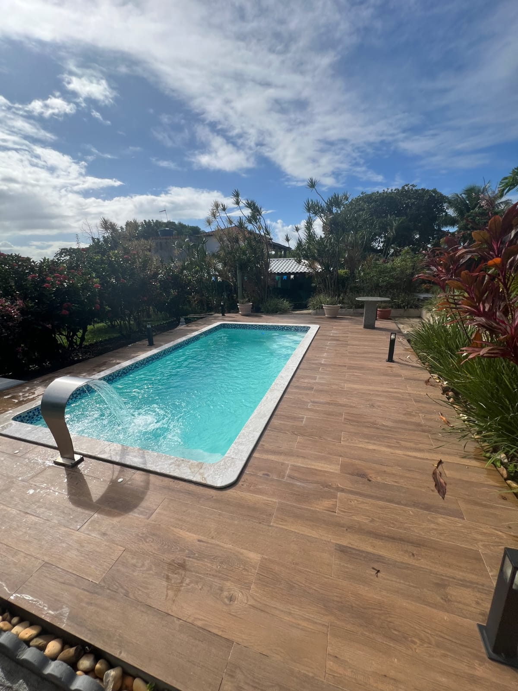
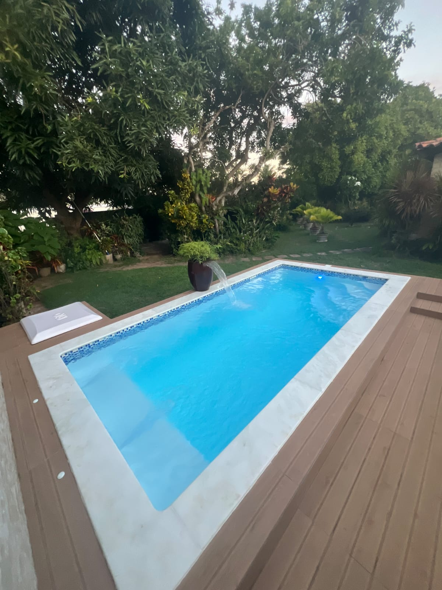
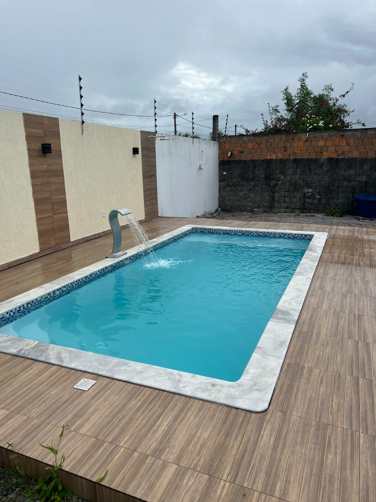
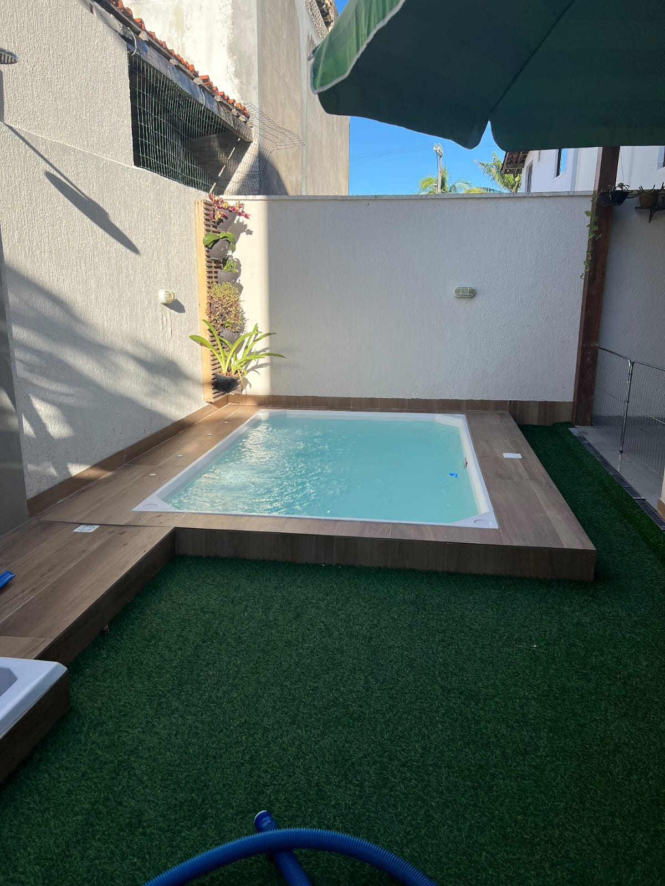

Orientação antes da compra
Ajuda para entender espaço, modelo, uso da família e o melhor caminho para sair do desejo para o orçamento.
Piscinas e áreas de lazer em Camaçari-BA
Projetos pensados para famílias que querem conforto, segurança e momentos inesquecíveis sem complicação.
Para quem quer realizar o sonho da área de lazer com segurança, a Linha Verde Spas e Piscinas oferece suporte próximo, comunicação simples e soluções para residências que valorizam bem-estar, família e bons momentos.
Piscinas compactas, familiares e áreas de lazer completas para diferentes tamanhos de quintal.





Ajuda para entender espaço, modelo, uso da família e o melhor caminho para sair do desejo para o orçamento.
Soluções para áreas compactas, casas familiares e projetos com acabamento mais sofisticado.
Comunicação direta pelo WhatsApp, sem enrolação e com linguagem simples para quem quer comprar com confiança.
Conte sua ideia, cidade, medidas aproximadas e envie fotos do espaço.
A equipe analisa o perfil da área e indica possibilidades de piscina, spa ou acabamento.
Você entende opções, valores e próximos passos antes de decidir.
Depois da instalação, sua casa ganha um novo ponto de encontro para família e amigos.
Seja para reunir os filhos, receber amigos, brincar com os netos ou simplesmente relaxar no fim do dia, a área de lazer valoriza sua rotina e cria memórias dentro da própria casa.
Conversar sobre meu espaçoSim. A página foi criada com foco em atendimento para Camaçari-BA e região.
Não. O atendimento pode começar com fotos e medidas aproximadas do local.
Sim. Existem opções para espaços compactos, quintais médios e áreas de lazer maiores.
Linha Verde Spas e Piscinas
Envie uma mensagem agora e receba orientação para escolher a melhor opção para seu espaço.
Chamar no WhatsApp